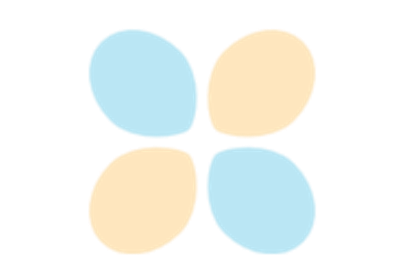

sklearn.set_config¶
-
sklearn.set_config(assume_finite=None, working_memory=None, print_changed_only=None)[source]¶ Set global scikit-learn configuration
New in version 0.19.
- Parameters
- assume_finitebool, optional
If True, validation for finiteness will be skipped, saving time, but leading to potential crashes. If False, validation for finiteness will be performed, avoiding error. Global default: False.
New in version 0.19.
- working_memoryint, optional
If set, scikit-learn will attempt to limit the size of temporary arrays to this number of MiB (per job when parallelised), often saving both computation time and memory on expensive operations that can be performed in chunks. Global default: 1024.
New in version 0.20.
- print_changed_onlybool, optional
If True, only the parameters that were set to non-default values will be printed when printing an estimator. For example,
print(SVC())while True will only print ‘SVC()’ while the default behaviour would be to print ‘SVC(C=1.0, cache_size=200, …)’ with all the non-changed parameters.New in version 0.21.
See also
config_contextContext manager for global scikit-learn configuration
get_configRetrieve current values of the global configuration
Examples using sklearn.set_config¶
